2025
Octobre
-
25 —
Enquête surnaturelle, psychologie et histoires pour enfants
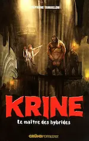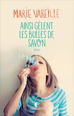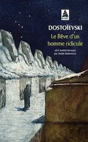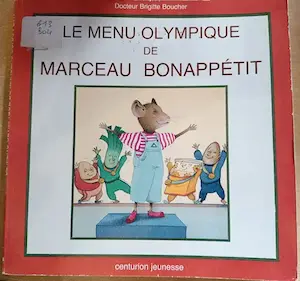
 Krine : Le maître des hybrides (Stéphane Tamaillon), ♡ Ainsi gèlent les bulles de savon (Marie Vareille), Le rêve d’un homme ridicule (Dostoïevski), Le menu olympique de Marceau Bonappétit (Brigitte Boucher), Sam le ballerin aquatique (Sybella Chopinet)
Krine : Le maître des hybrides (Stéphane Tamaillon), ♡ Ainsi gèlent les bulles de savon (Marie Vareille), Le rêve d’un homme ridicule (Dostoïevski), Le menu olympique de Marceau Bonappétit (Brigitte Boucher), Sam le ballerin aquatique (Sybella Chopinet) -
25 —
Comédies, comédies dramatiques, romance, aventure, thriller, horreur
 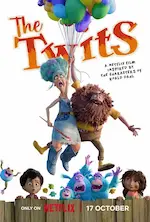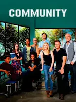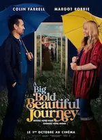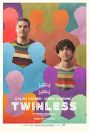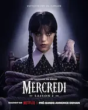Harold et Kumar chassent le burger, Harold et Kumar s’évadent de Guantanamo, Le Joyeux Noël d’Harold et Kumar, Les deux Gredins, Community, A big bold beautiful journey, ♡ Caramelo, Chosen family, Twinless, HPI (saison 5), French lover, Monster summer, La disparue de la cabine 10, Mercredi (saison 2), Conjuring : L’heure du Jugement
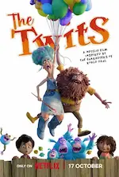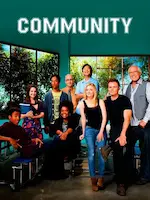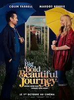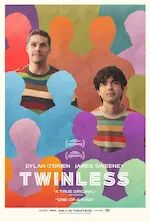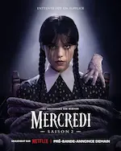Harold et Kumar chassent le burger, Harold et Kumar s’évadent de Guantanamo, Le Joyeux Noël d’Harold et Kumar, Les deux Gredins, Community, A big bold beautiful journey, ♡ Caramelo, Chosen family, Twinless, HPI (saison 5), French lover, Monster summer, La disparue de la cabine 10, Mercredi (saison 2), Conjuring : L’heure du Jugement
Septembre
Août
-
17 —
Essai politique, romance en manga et enquêtes surnaturelles
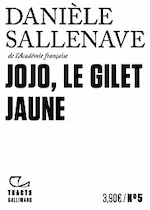
 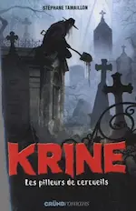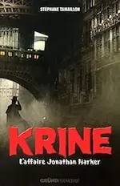Jojo, le gilet jaune (Danièle Sallenave), Toi et moi, jamais (Mayu Sakai), Krine : Les pilleurs de cercueils, Krine : L'affaire Jonathan Harker (Stéphane Tamaillon)
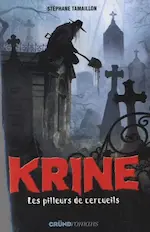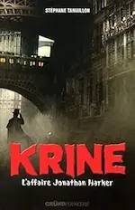Jojo, le gilet jaune (Danièle Sallenave), Toi et moi, jamais (Mayu Sakai), Krine : Les pilleurs de cercueils, Krine : L'affaire Jonathan Harker (Stéphane Tamaillon) -
16 —
Romance, comédie et aventures
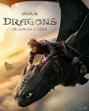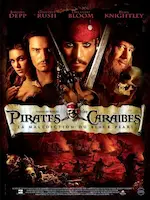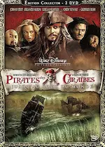Betty : la chance de sa vie, Bridget Jones : folle de lui, Ruby à tout prix, Les condés, Dora : à la recherche du Sol Dorado, Dragons, Pirates des Caraïbes : la malédiction du Black Pearl, Pirates des Caraïbes : le secret du coffre maudit, Pirates des Caraïbes : jusqu'au bout du monde
- 15 — 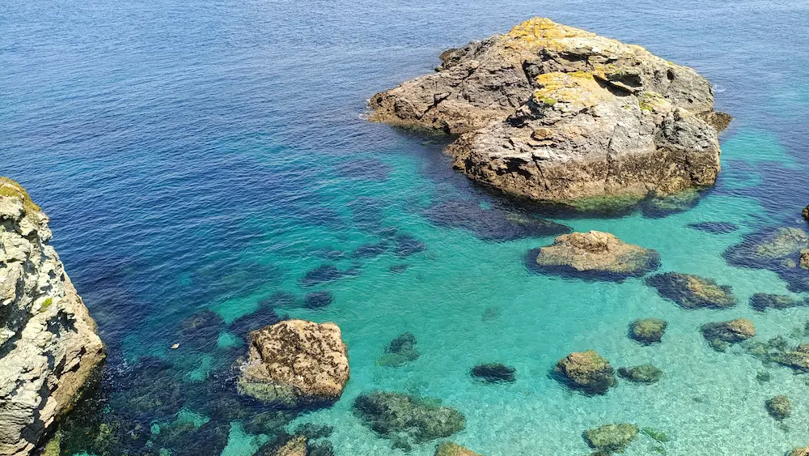 Vacances en Bretagne du 27/07/2025 au 12/08/2025
Juillet

Juin
-
09 —
Séries sur des Cold case, des urgences, une dystopie et de la comédie en animation
 Black Snow, 9 ⸱ 1 ⸱ 1, Severance, Astérix et Obélix – Le combat des chefs
Black Snow, 9 ⸱ 1 ⸱ 1, Severance, Astérix et Obélix – Le combat des chefs - 09 — Balade à Thueyts (30/05/2025) et au Mont Dore (08/06/2025)
-
06 —
Magie, tranche de vie et aventures
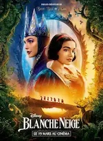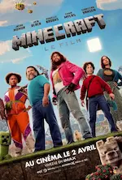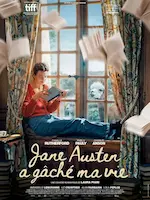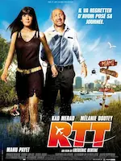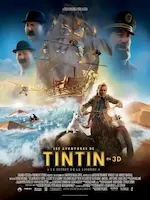Blanche Neige, Minecraft – Le film, Jane Austen a gâché ma vie, RTT, Les aventures de Tintin – Le secret de la Licorne
-
01 —
Bandes dessinées entre subtilité et sujet intense, roman jeunesse
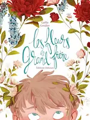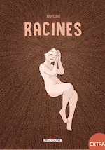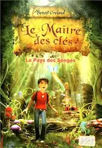Les fleurs de grand frère (Gaëlle Geniller), ♡ Racines (Lou Lubie), Le maître des clés – Le pays des songes (Benoit Grelaaud)
Mai
Avril
- 19 — Essai à la guitare 🎶
-
15 —
Livres jeunesse
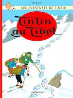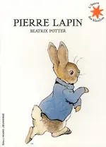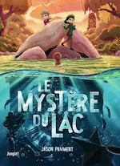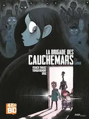
 Tintin au Tibet (Hergé), Pierre Lapin (Beatrix Potter), ♡ Le mystère du lac (Jason Pamment), La brigade des cauchemars - T.1 Sarah (Franck Thilliez, Yomgui Dumont et Drac), L’atelier d’Agathe et Lola - 2.Tous pour Benji ! (Catherine Kalengula)
Tintin au Tibet (Hergé), Pierre Lapin (Beatrix Potter), ♡ Le mystère du lac (Jason Pamment), La brigade des cauchemars - T.1 Sarah (Franck Thilliez, Yomgui Dumont et Drac), L’atelier d’Agathe et Lola - 2.Tous pour Benji ! (Catherine Kalengula) -
12 —
Comédies, biopics et dystopies
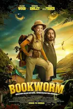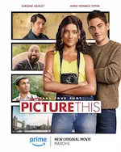R.I.P.D. Brigade Fantôme, Bookworm, L’amour dans l’objectif, Paddington au Pérou, La Résidence, Better man, Un parfait inconnu, O’Dessa, Mickey 17
Mars
-
16 —
Bandes dessinées, magie et roman beaucoup trop long
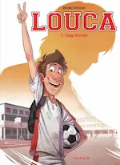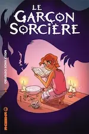♡ Louca (Bruno Dequier), Le garçon sorcière (Molly Knox Ostertag), ♡ La maison aux mille détours (Diana Wynne Jones), La diagonale des Reines (Bernard Werber)
-
13 —
Amour, famille et fantômes
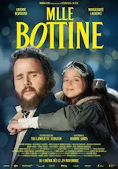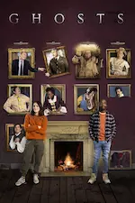L’Amour ouf, ♡ Melle Bottine, Ghosts (UK)
-
01 —
Grimm, CB Strike, Panda
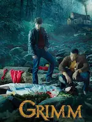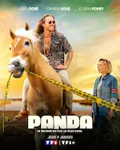♡ Grimm (intégrale), CB Strike (saison 6), Panda (saison 2)
Février
-
08 —
💖 Un peu de magie et d’amour en lecture
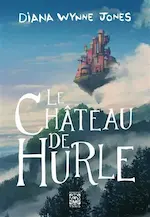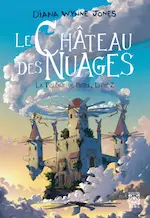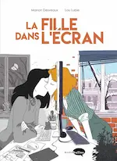♡ Le Château de Hurle (Diana Wynne Jones), ♡ Le Château des nuages (Diana Wynne Jones), ♡ La fille dans l’écran (Lou Lubie et Manon Desveaux)
-
04 —
Noël, altruisme, magie, animation, horreur et comédie
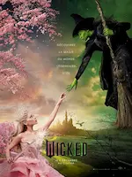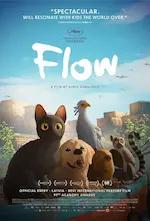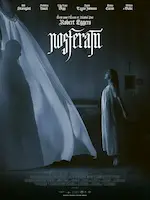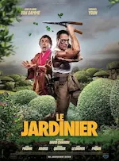Dear Santa, Un merveilleux Noël en famille, Fêlés, Wicked, Le Seigneur des Anneaux - La guerre des Rohirrim, Flow, ♡ Nosferatu, Le jardinier